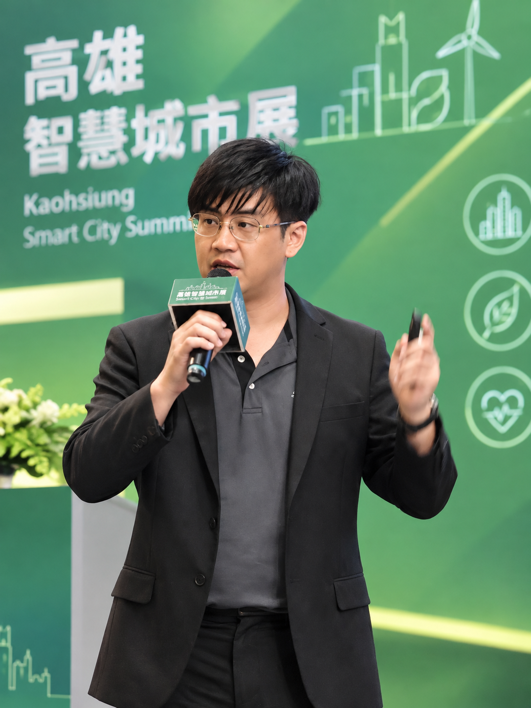

具備在職系統維護優化實績與 6 年大型科技展會、政府數位專案統籌經驗。曾於台北市電腦公會任職期間以 ASP.NET MVC + MS SQL Server 維護並優化展期活動系統（服務逾 5 萬參觀人次）；後於資策會 (III)、資展國際(ISpan)全端班完成高強度實戰培訓並擔任結訓專題組長，擅長需求分析、關聯式資料庫設計與前後端分離架構開發。
一、從業務痛點出發的開發者：在職維護與優化展會系統，確立軟體工程職涯
您好，我是廖英盛。過去於台北市電腦商業同業公會 (TCA) 負責「高雄智慧城市展」專案統籌期間，面對超過 5 萬名參觀人次與 75
場以上專業論壇的資訊發布需求，展期常面臨即時且高頻率的議程異動。為解決維護痛點並提升資訊即時性，我主動協助既有官網的架構優化與功能修正，運用 C# ASP.NET
MVC、MS SQL
Server、jQuery/Ajax 與 Bootstrap 5
調整資料存取邏輯與前端顯示。這次在職維護與優化系統的實戰經驗，讓我深刻體會到「以軟體工程規模化解決業務痛點」的價值，也促使我決定全職投入軟體工程領域。
二、資策會全端實戰與組長歷練：掌握 .NET Core 與 Vue 3 前後端分離架構
為建立系統化的軟體工程底層基礎，我投入資策會 (III)、資展國際(ISpan)全端網頁開發工程師養成班（第 159 期）進行 6
個月全日制密集訓練，期間完成兩項具體實戰作品：
Vue 3 (Vite / Pinia) + ASP.NET Core Web API + EF Core + SQL Server
前後端分離架構。我負責專案底層架構規劃、Git
分支協作規範制定與 RESTful API 規格開立。技術實作亮點包含：
C# WinForms + ADO.NET / EF + LINQ + MS SQL Server
實作桌上型管理系統。落實客製化飲品動態計價、會員紅利折抵與 RBAC
權限隔離，並運用資料庫 Transaction 交易機制與外鍵防呆驗證，確保高頻結帳時庫存扣減的安全與一致性。
三、未來展望：兼具全端開發實力與跨職能溝通價值的即戰力
過去 6 年主導大型科技展會與政府數位轉型標案（曾獲數位發展部全國亞軍）的歷練，培養出我敏銳的需求拆解能力、嚴謹的時程控管意識與跨部門溝通手腕。進入開發團隊後，我不僅能以紮實的 C#
.NET
與前端技術交付穩定功能，更能快速同理 PM、業務與客戶端的業務情境，將商業邏輯精準轉化為清晰、具擴充性且可維護的程式碼，成為團隊中即戰力與溝通兼具的工程夥伴。
| 期間 | 專案／系統名稱 | 擔任角色 | 技術應用與專案成果 |
|---|---|---|---|
| 2026 | 《書嶼 BookISLE》前後端分離線上書店電商平台 | 專題組長 / 全端 | Vue 3 + .NET Core API / ECPay / Gemini AI |
| 2026 | 《Smart Coffee System》POS 收銀與後台營運系統 | 獨立全端開發 | C# WinForms + EF / ADO.NET + MSSQL |
| 2023 ~ 2026 | 高雄智慧城市展 (KSCSE) 暨 2025 展期活動網站維護 | 網站維護 / 企劃 | ASP.NET MVC + MSSQL / 累計 5萬+ 參觀人次 |
| 2022 | 數位發展部創業歸故里競賽 — 古坑桌球村（智慧科技培訓場域） | 主企劃 | 全國 104 隊中榮獲全國亞軍、服務推廣獎 |
| 2022 | 經濟部中小企業處數位群聚計畫 — 雲遊斗南 | 行銷企劃 | 導入數位行銷工具與跨產業數位轉型 |
| 2019 ~ 2021 | 經濟部 SBIR 科技數位旅遊計畫 ＆ 雲林智慧農業大學計畫 | 研究員 / 協辦 | 碩士期間數位旅遊服務規劃與科技導入研究 |